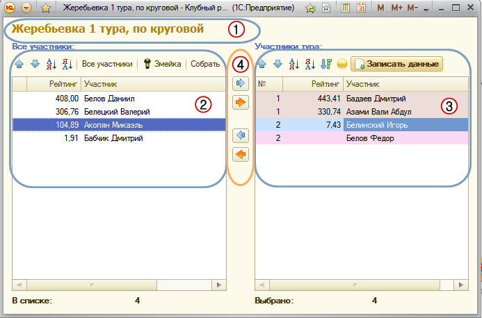

1. Заголовок для более понятного варианта того этапа, которому проводится жеребьевка участников.
2. Список участников соревнования для перемещения в список для жеребьевки содержит колонки;
a. «№ места», которое занял в предыдущем этапе, если это не первый этап.
b. Рейтинг – текущий рейтинг участника в данном соревновании.
c. Ф.И.О. – участника.
d. Для управления списком участников есть кнопки действия такие, как:
i. Перемещение позиции участника вверх , вниз
(так же это можно делать с помощью зажатой левой кнопки мыши).
ii. Сортировка по выделенной колонки по возрастанию и убыванию
.
iii. Кнопка все участники – перезаполняет всех участников из «Списка участников» документа.
iv. Для группового этапа:
1. Змейка – вариант жеребьевки методом «змейка».
2. «Собрать» - если до этого этапа уже был предварительный этап, и есть рассчитанные места участников, тогда с помощью кнопки, можно собрать участников занявшие с 1 по 3 места в 1 группу, с 4-5 места во 2 группу и так далее. Варианты «с ‘x’ по ‘y’ места», можно настроить в этом же окне кнопкой «Настроить».
3. Правый список участников, непосредственно в нем происходит жеребьевка участников, этот список содержит такие колонки:
a. Для группового этапа:
i. Номер группы – проставляется автоматически при заполнении кнопками «Змейка», «Собрать».
ii. Рейтинг и ФИО аналогично левому списку
b. Для сеток:
i. Номер в сетке – номер, куда будет определен участник в сетке
ii. Пропуск 1 тура – эта галка служит для того, что этот участник не будет играть первый тур, а автоматически проходит сразу во второй. Такое происходит при не полном количестве участников. Например: сетка для 8 человек, а участников 7 или 6.
c. Кнопки перемещения и сортировки аналогично левому списку.
d. « Сортировка по номеру потом по рейтингу» - работает для всех этапов, сортирует правый список, таким образом, сначала по номеру (№ группы или места в сетке) за тем по рейтингу.
e. « Кинуть жребий» - если Вам нужно кинуть монетку, то это можно сделать и в программе для определения в какую группу или верх-низ сетки. (используется алгоритм случайных чисел).
f. «Записать данные» - записывает результаты жеребьевки в соревнование и открывает соответствующую форму для продолжения проведения соревнования.
4. Для того что бы определить участника к нужной группе, или номеру в сетке, его необходимо переместить в правый список, это можно сделать несколькими способами:
a. Двойным нажатием левой кнопкой мыши на участнике или кнопкой Enter.
b. Выделить участника в списке и нажать на кнопку « ».
c. Можно перенести сразу всех участников « »
Важно. Для группового этапа порядок участников в группе будет такой же, как и был установлен в момент жеребьевки. Если была допущена ошибка в порядке, это можно исправить в форме соревнования нажатием кнопки « Результат жеребьёвки» и скорректировать в этой форме до нужного результата.
Редакция от 16.11.2013